에너지관리기사 (2003-03-16 기출문제)
1과목: 연소공학
1. 중유의 탄수소비가 증가함에 따른 발열량의 변화는?
- 감소한다.
- 증가한다.
- 무관하다.
- 초기에 증가하다 차츰 감소한다.
(정답률: 87%)

2. 연소가스 중에 들어 있는 성분을 이산화탄소(CO2), 중탄화수소(CmHn), 산소(O2) 등의 순서로 흡수체에 접촉 분리시킨 후 체적 변화로 조성을 구하고, 이어 잔류가스에 공기나 산소를 혼합, 연소시켜 성분을 분석하는 기체연료 분석 방법은?
- 치환법
- 헴펠법
- 리비히법
- 에슈카법
(정답률: 82%)
3. 프로판(C3H8)가스를 30% 과잉공기로 연소시킬 때 이론상도달할 최고 온도는 몇 ℃인가? (단, 프로판의 저발열량은 22390㎉/Nm3로 하고, 기준온도는 0℃, 수증기를 함유한 배기가스의 평균비열은 0.395㎉/Nm3℃로 하며 고온에 대한 열분해는 없는 것으로 한다.)
- 23290℃
- 5161.2℃
- 2316.1℃
- 1615.4℃
(정답률: 27%)
4. 다음 조성의 발생로 가스를 15%의 과잉공기로 완전연소시켰을 때의 건연소가스량(Nm3/Nm3)은? (단, 발생로 가스의 조성은 CO(31.3%), CH4(2.4%), H2(6.3%), CO2(0.7%), N2(59.3%)이다.)
- 1.99
- 2.54
- 2.87
- 3.01
(정답률: 39%)
5. 수소 1Nm3를 공기중에서 연소시킬 때 생성되는 전체 연소가스량(Nm3)은?
- 1.00
- 1.88
- 2.88
- 42.13
(정답률: 67%)
6. 어떤 연료의 성분이 아래와 같을 때 이론공기량[Nm3/kg]은? [ C = 0.85, H = 0.13, O = 0.02 ]
- 8.24
- 9.32
- 10.96
- 11.98
(정답률: 43%)
7. C3H8 1Nm을 연소했을 때의 습연소가스량(m3)은 얼마인가? (단, 공기 중의 산소는 21%이다.)
- 21.8
- 24.8
- 25.8
- 27.8
(정답률: 46%)
8. 프로판가스 1Nm3를 공기과잉률 1.1로 완전 연소시켰을 때의 건연소가스량은 몇 Nm3인가?
- 14.9
- 18.6
- 24.0
- 29.4
(정답률: 55%)
9. 스토우커를 이용하여 무연탄을 연소시키고자 할 때의 고려사항으로서 잘못된 것은?
- 미분탄 상태로 하고 공기는 예열한다.
- 스토우커 후부에 착화아치를 설치한다.
- 연소장치는 산포식 스토우커가 적합하다.
- 충분한 연소가 되도록 2차공기를 넣어 준다.
(정답률: 35%)
10. 산포식 스토우커(Stoker)를 이용한 강제통풍일 때의 화격자 부하는 어느 정도인가?
- 80 ~ 110㎏/m2h
- 150 ~ 200㎏/m2h
- 100 ~ 150㎏/m2h
- 50 ~ 80㎏/m2h
(정답률: 49%)
11. 다음 중 회(灰)의 부착으로 인하여 고온부식이 잘 생기는 곳은?
- 절탄기
- 과열기
- 보일러 본체
- 공기예열기
(정답률: 74%)
12. 연돌높이 200m, 배기가스의 평균온도 127℃, 외기온도 27℃라고 할 때의 통풍력은 몇 ㎜H2O인가? (단, 표준상태하에서 대기의 비중량은 3㎏/m2, 가스의 비중량은 2㎏/m2이다.)
- 0
- 128.4
- 136.5
- 273
(정답률: 25%)
13. 다음 중 대규모 화력발전용 보일러의 주연료로 사용되고 있지 않은 것은?
- LNG
- LPG
- 미분탄
- 중유
(정답률: 31%)
14. 연소 가스의 노점(Dew point)은 다음 중 어느 것에 가장 영향을 많이 받는가?
- 연료의 연소 온도
- 연소가스중의 수분 함량
- 과잉공기 계수
- 배기가스의 열회수율
(정답률: 50%)
15. 가스의 연소시 연소파의 유무 및 전파속도에 따라 연소상태를 몇가지 유형으로 구분하는데 이중 연소파의 전파속도가 초음속이 되는 경우는?
- 폭발연소
- 충격파연소
- 디플라그레이션
- 디토네이션
(정답률: 52%)
16. 보일러의 급수 및 발생증기의 엔탈피를 각각 150, 670kcal/kg이라고 할 때 20000kg/h의 증기를 얻으려면 공급열량은 얼마인가?
- 9.6 × 106(kcal/h)
- 10.4 × 106(kcal/h)
- 11.7 × 106(kcal/h)
- 12.2 × 106(kcal/h)
(정답률: 65%)
17. 화염(火炎)온도를 높이려고 할 때 틀린 조작은?
- 공기를 예열한다.
- 과잉공기를 사용한다.
- 연료를 완전히 연소시킨다.
- 로벽(爐壁)등의 열손실을 막는다.
(정답률: 77%)
18. 다음 중 배출가스 탈황법에 사용되는 물질이 아닌 것은?
- 수산화나트륨
- 석회석
- 백운석
- 암모니아
(정답률: 42%)
19. 연소가스중의 황산화물을 제거하는 방법이 아닌 것은?
- 용매 추출법
- 석회 첨가법
- 아황산 석회법
- 활성탄 흡착법
(정답률: 54%)
20. 다음 집진장치중 압력손실이 가장 큰 것은?
- 중력집진기
- 원심분리기
- 전기집진기
- 분무탑
(정답률: 58%)
2과목: 열역학
21. 다음 중 랭킨(Rankine) 싸이클과 관계되는 것은?
- 가스 터빈
- 증기 원동소
- carnot 열 기관
- 가솔린 기관
(정답률: 56%)
22. 엔탈피 25[㎉/㎏]인 물을 보일러에서 가열, 엔탈피 756[㎉/㎏]인 증기를 10[ton/h]의 비율로 만들어 이것 전체를 증기터빈에 송입하였더니 출구 엔탈피는 596[㎉/㎏]였다. 보일러의 가열량은 약 얼마인가?
- 2.6x106[㎉/h]
- 7.3x106[㎉/h]
- 13.8x106[㎉/h]
- 25.0x106[㎉/h]
(정답률: 52%)
23. 카본 확담과 내화벽돌, 보온벽돌의 3층으로 형성된 노벽이 있다. 그 두께가 각각 10㎝, 20㎝, 10㎝일 때 열전도도는 8, 1, 0.2[㎉/m.h.℃]이다. 노내벽 온도는 1100℃, 외벽 온도는 60℃일 때 벽면 1m2에서 매시간 얼마의 열손실[㎉]이 있는가?
- 150
- 1320
- 1460
- 1640
(정답률: 44%)
24. 압력 10atm, 건도 0.9의 습증기 100㎏의 총열량은? (단, 10atm의 포화증기의 엔탈피는 662.9㎉/㎏, 포화수의 엔탈피는 181.25㎉/㎏으로 한다.)
- 57661㎉
- 48165㎉
- 61474㎉
- 82600㎉
(정답률: 26%)
25. 수은의 정상 비점(끊는 점)은 356.9℃이다. 이 온도와 25℃사이에서 조업되는 어떤 수은 열기관의 최대 효율은?
- 0.450
- 0.527
- 0.635
- 0.735
(정답률: 38%)
26. 랭킨(Rankine) 사이클에 대한 설명이다. 틀린 것은?
- 랭킨 사이클에도 단점이 존재한다.
- 카르노 사이클(Carnot cycle)에 가깝다.
- Reheat cycle의 단점을 개선한 cycle이다.
- 포화수증기를 생산하는 핵동력 장치에 가깝다.
(정답률: 52%)
27. 다음 중에서 이상기체상수(R)의 값이 다른 것은?
- 82.⑤ cc-atm/mol.K
- 8.314 joule/mol.K
- 1.987 ㎈/mol.K
- 0.82⑤ erg/mol.K
(정답률: 43%)
28. 1[atm]의 포화수를 5[atm]까지 단열 압축하는데 필요한 펌프 일은 몇 [㎏.m/㎏]인가? (단, 1[atm]에서 V'=0.001048, V''=1.725[m3/㎏]이다.)
- 41.72
- 21.44
- 16.91
- 5.21
(정답률: 14%)
29. 동일한 온도, 압력의 포화수 1㎏과 포화 증기 4㎏을 혼합하였을 때 이 증기의 건도는 얼마인가?
- 20%
- 25%
- 75%
- 80%
(정답률: 31%)
30. 다음 설명 중 틀린 것은?
- 포화수보다 포화증기는 온도가 높다.
- 건포화 증기를 가열한 것이 과열증기이다.
- 과열증기는 건포화 증기보다 온도가 높다.
- 습포화 증기와 건포화 증기는 온도가 같다.
(정답률: 33%)
31. 0℃와 100℃ 사이에서 조작되는 Carnot냉동기의 성적계수(CP 또는 COP)는 얼마인가?
- 1.69
- 2.73
- 3.56
- 4.20
(정답률: 60%)
32. 다음 중 상태량 간의 관계식 TdS = dH - VdP에 관한 설명으로 옳지 않은 것은? (단, T는 절대온도, S는 엔트로피, H는 엔탈피, V는 비체적, P는 압력)
- 이 식은 가역과정에 대해서 성립한다.
- 이 식은 비가역 과정에 대해서도 성립한다.
- 이 식은 가역과정의 경로에 따라 적분할 수 있다.
- 이 식은 비가역 과정의 경로에 대하여도 적분할 수 있다.
(정답률: 48%)
33. 다음 중 냉동제로 쓰이지 않는 것은?
- 암모니아
- CO
- CO2
- Freon 화합물
(정답률: 47%)
34. 온도가 300℃, 압력이 2기압인 공기가 탱크에 밀착되여 대기 공기로 냉각되었다. 이 때의 탱크내 공기의 엔트로 피의 변화량은 ΔS1, 대기 공기의 엔트로피의 변화량은 ΔS2라 하면 엔트로피 증가의 원리를 이 경우에 해당시키면 아래 어느 것이 되는가?
- ΔS1 ＞ 0
- ΔS2 ＞ 0
- ΔS1 + ΔS2 ＞ 0
- ΔS1 + ΔS2 = 0
(정답률: 67%)
35. 최고 온도 500℃와 최저 온도 30℃사이에서 작동되는 열기관의 이론적 효율은?
- 6%
- 39%
- 61%
- 94%
(정답률: 49%)
36. 어느 기체의 압력과 부피의 관계가 P = 3V + 60일 때 부피가 초기 상태(Ｖ1)에서 최종 상태(Ｖ2)로 2배 팽창하였다면 이 때 행해진 일은?
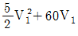
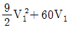
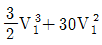
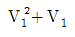
(정답률: 35%)
37. 격리된 계(isolated system)의 엔트로피(entropy)는 어떻게 변할 수 있는가?
- 감소만 가능
- 증가만 가능
- 항상 일정
- 일정하거나 또는 증가
(정답률: 27%)
38. 이상기체 1몰이 온도 T k에서 체적이 V1 에서 V2로 등온 가역적으로 팽창될 때 엔트로피 변화를 구한 식은? (단, R = 기체상수, P = 압력, S = 엔트로피 )
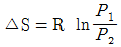
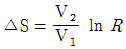
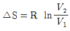
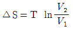
(정답률: 36%)
39. 다음 중 열역학적 경로함수는?
- 밀도
- 압력
- 일
- 점도
(정답률: 50%)
40. 다음에서 물의 삼중점(三重點)의 온도는?
- 0℃
- 273.16℃
- 73K
- 273.16K
(정답률: 53%)
3과목: 계측방법
41. 액주식 압력계의 액체특성으로 틀린 것은?
- 점성이 클 것
- 열팽창계수가 작을 것
- 성분이 일정할 것
- 모세관현상이 작을 것
(정답률: 66%)
42. 유량계 중 월트만(Waltman)식에 대한 설명으로 옳은 것은?
- 차압식 유량계에서 노즐타입과 벤츄리 타입을 혼합한것
- 전자식 유량계의 일종
- 유속식 유량계중에서 축류식인 것
- 용적식 유량계중 박막식의 것
(정답률: 31%)
43. 가스크로마토그래피법에서 수소염 이온화 검출기는?
- ECD
- FID
- HCD
- FTD
(정답률: 64%)
44. 금속표면의 복사율을 0.82라 가정하였을 때 금속편으로부터 방사되는 열을 측정하여 온도를 측정한 결과 1950℉였다. 실험후에 금속표면의 복사율이 0.82가 아니라 0.75인 것으로 판명이 되었다면 온도결정에 있어서 얼마만한 오차가 있었겠는가?
- 100℉
- 108℉
- 54℉
- 84℉
(정답률: 37%)
45. 전자유량계의 특징을 설명한 것이다. 틀린 것은?
- 압력손실이 없다.
- 정도는 약 1%이고 고성능 증폭기를 필요로 한다.
- 전도성 액체에 한하여 사용할 수 있다.
- 내식성 유지가 곤란하다.
(정답률: 61%)
46. 다음 중 1차계 제어계에서 시간상수에 대한 관계식은? (단, τ : 시간상수, R : 저항, C : 캐피시턴스)
- τ = C x R
- τ = C ÷ R
- τ = R + C
- τ = R - C
(정답률: 43%)
47. 다음 중 정도가 가장 나쁜 압력계는?
- 액주형 압력계
- 분동식 압력계
- 브르돈관 압력계
- 면적식 압력계
(정답률: 44%)
48. 기체 및 액체 양용으로 사용되는 유량계는?
- 오발(oval) 유량계
- 전자식(電磁式) 유량계
- 루트(root) 유량계
- 교축기구(차압)식 유량계
(정답률: 30%)
49. 조리개식 유량계의 종류를 열거한 것이다. 아닌 것은?
- 오리피스
- 플로우노즐
- 터빈유량계
- 벤튜리
(정답률: 57%)
50. 다음 압력계 중에서 가장 정도가 높은 것은?
- 액주형 압력계
- 분동식 압력계
- 탄성압력계
- 피스톤 압력계
(정답률: 34%)
51. 다음 중 액면 측정방법이 아닌 것은?
- 부자식(浮子式)
- 액압(液壓)측정식
- 정전(靜電)용량식
- 박막식(薄膜式)
(정답률: 37%)
52. 자동제어에서 전달함수의 블록선도를 그림과 같이 등가변환시킨 것으로 적합한 것은?
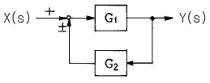
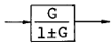
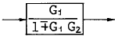
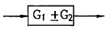
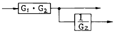
(정답률: 48%)
53. 자동연소 장치의 광전관 화염검출기가 정상적으로 작동하고 있는지를 간단히 점검할 수 있는 가장 좋은 방법은?
- 광전관 회로의 전류를 측정해 본다.
- 화염검출기(火炎檢出器) 앞을 가려 본다.
- 광전관회로의 연결선을 제거해 본다.
- 파이로트 버너(Pilot Burner)에 점화하여 본다.
(정답률: 72%)
54. 응답이 빠르며 극히 고감도이고, 도선저항에 의한 오차를 적게할 수 있으나 특성을 고르게 얻기가 어려우며, 충격에 대한 기계적 강도가 떨어지는 측온체는?
- 더미스터저항체 온도계
- 열전대 온도계
- 금속측온저항체 온도계
- 광고온계
(정답률: 56%)
55. 열전대 온도계의 계측기는 다음의 어느 것을 사용하는가?
- 전위차계
- 전류계
- 전력계
- 저항계
(정답률: 69%)
56. 비례-적분 제어동작에서 적분동작은, 비례동작을 사용했을 때 발생하는 어떤 문제점을 제거하기 위한 것인가?
- 오프셋(off-set)
- 빠른응답(quick response)
- 안정성(stability)
- 외란(disturbance)
(정답률: 48%)
57. 안지름 14㎝인 관에 물이 가득 흐를 때 피토관으로 측정한 유속이 7m/sec였다면 이 때의 유량(kg/sec)은?
- 약 39
- 약 108
- 약 433
- 약 1077
(정답률: 47%)
58. 더미스터(thermistor) 측온 저항체의 특성은?
- 저항온도계수가 부특성(負特性)이다.
- 온도변화에 따른 저항변화가 직선성이다.
- 저항온도계수는 섭씨온도 제곱에 비례한다.
- 호환성(互換性)이 좋다.
(정답률: 54%)
59. 열전도율형 CO2분석계 사용시 주의 사항으로 틀린 것은?
- 브리지의 공급 전류의 점검을 확실하게 행한다.
- 셀의 주위온도와 측정가스 온도를 거의 일정하게 유지시키고 과도한 상승은 피한다.
- H2의 혼입은 지시를 높여 준다.
- 가스 유속을 거의 일정하게 한다.
(정답률: 72%)
60. 방사율에 의한 보정량이 적고 비접촉법으로는 정확한 측정이 가능하나 사람 손이 필요한 결점이 있는 온도계는?
- 압력계형 온도계
- 전기저항 온도계
- 열전대 온도계
- 광(光)고온계
(정답률: 65%)
4과목: 열설비재료 및 관계법규
61. 검사대상 기기의 검사 종류가 아닌 것은?
- 제조검사
- 완성검사
- 설치검사
- 계속 사용검사
(정답률: 42%)
62. 알루미늄박 보온재는 어떤 특성을 이용한 것인가?
- 복사열의 통과 특성
- 복사열의 대류 특성
- 복사열에 대한 반사 특성
- 복사열에 대한 흡수 특성
(정답률: 63%)
63. 산업자원부령이 정하는 특정열사용기자재를 설치.시공 또는 세관을 업으로 하는 자는 규정에 의하여 누구에게 등록하여야 하는가?
- 산업자원부장관
- 에너지관리공단이사장
- 환경부장관
- 시∙도지사
(정답률: 70%)
64. 단열재 제조공정을 설명한 아래 그림과 같은 공정을 거친제품은?
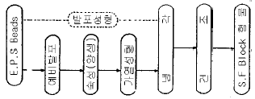
- 암면
- 유리면
- 요소발포 보온재
- 발포 폴리스틸렌폼
(정답률: 50%)
65. 에너지이용합리화법 상 다음 내용 중 잘못 설명된 것은?
- 에너지사용자란 에너지 사용시설의 소유자 또는 관리자를 말한다.
- 에너지사용시설이라 함은 에너지를 사용하는 공장∙사업장 기타 시설과 에너지를 전환하여 사용하는 시설을 말한다.
- 에너지공급자라 함은 에너지를 생산.수입.전환.수송.저장.판매하는 사업자를 말한다.
- 연료라 함은 석유.석탄.대체에너지 기타 열 등으로 제품의 원료로 사용되는 것을 말한다.
(정답률: 44%)
66. 특정열사용 기자재중 검사대상기기의 검사 유효기간이 맞는 것은?
- 보일러 설치장소 변경검사 : 1년
- 보일러 구조검사 : 2년
- 압력용기 계속 사용검사 : 3년
- 철금속가열로 계속 사용검사 : 5년
(정답률: 42%)
67. 캐스터블(castable) 내화물의 특성이 아닌 것은?
- 소성할 필요가 없다.
- 사용 현장에서 필요한 형상으로 성형할 수 있다.
- 접합부 없이 노체를 구축할 수 있다.
- 온도의 큰 변동에 따라 스폴링(spalling)을 일으키기쉽다.
(정답률: 57%)
68. 용광로에서 선철을 만들 때 쓰이는 주원료라고 인정할 수 없는 것은?
- 규선석(珪線石)
- 석회석(石灰石)
- 철광석(鐵鑛石)
- 코크스
(정답률: 57%)
69. 다음 중 고체 용융형 로가 아닌 것은?
- 발생로
- 평로
- 반사로
- 도가니로
(정답률: 23%)
70. 로재(내화물)의 기본 제조공정으로 그 순서가 옳은 것은?
- 혼련 → 성형 → 분쇄 → 소성 → 건조
- 분쇄 → 성형 → 혼련 → 건조 → 소성
- 혼련 → 분쇄 → 성형 → 소성 → 건조
- 분쇄 → 혼련 → 성형 → 건조 → 소성
(정답률: 59%)
71. 보일러 계속사용검사의 유효기간이 경과되었으나 검사를 받지 않고 계속하여 사용할 경우 벌칙은?
- 2년 이하의 징역 또는 2천만원 이하의 벌금
- 1년 이하의 징역 또는 1천만원 이하의 벌금
- 200만원 이하의 벌금
- 100만원 이하의 벌금
(정답률: 53%)
72. 열에너지의 손실을 적게하기 위해서는 보온재의 선택조건을 고려해야 한다. 다음 중 보온재의 선택조건과 관계가 없는 것은?
- 노재의 수분 함유로인한 급격한 승온(昇溫)의 고려
- 물리적 화학적 강도와 내용(耐用)년수
- 단위 체적당의 가격 및 불연성
- 사용온도 범위와 열전도율
(정답률: 38%)
73. 산자부장관은 에너지관리의 효율적인 수행 또는 검사대상기기의 안전관리를 위하여 필요하다고 인정하는 경우 시공업의 기술인력 또는 검사대상기기조정자에 대하여 교육을 실시할 수 있는데 이 때의 교육기간은?
- 3일이내
- 7일이내
- 1월이내
- 6월이상
(정답률: 31%)
74. 생석회(CaCO)와 같은 매용제가 필요한 로(爐)는?
- 연속 가열로
- 균열로
- LD 전로
- 터널로
(정답률: 24%)
75. 다음 자재 중 증기 배관용으로 사용되지 않는 것은?
- 인라인 증기믹서
- 시스탄 밸브
- 사일렌서
- 벨로즈형 신축관이음
(정답률: 35%)
76. 가마를 축조할 때 단열재 즉 단열벽돌을 사용하므로써 얻을 수 있는 효과중 옳지 않는 것은?
- 작업 온도까지 가마의 온도를 빨리 올릴 수 있다.
- 가마의 벽을 얇게 할 수 있다.
- 가마내의 온도 분포가 균일하게 된다.
- 내화벽돌의 내, 외온도가 급격히 상승한다.
(정답률: 58%)
77. 다음 중 파이프의 열변형에 대응하기 위한 이음은?
- 가스이음
- 플랜지이음
- 신축이음
- 소켓이음
(정답률: 59%)
78. 염기성 내화벽돌의 공통적인 취약성은?
- 스포올링(spalling)
- 슬레이킹(slaking)
- 더스팅(dusting)
- 습윤(濕潤,swelling)
(정답률: 53%)
79. 다음 중 석유 환산기준 발열량으로 틀린 것은?
- 원유 10,000kcal/kg
- 천연가스 10,500kcal/Nm3
- 등유 8,700kcal/kg
- 전기 2,000kcal/kWh
(정답률: 52%)
80. 에너지사용의 제한 또는 금지에 관한 조정.명령 기타 필요한 조치에 위반한 때의 1회 위반시 과태료는?
- 20만원
- 30만원
- 40만원
- 50만원
(정답률: 49%)
5과목: 열설비설계
81. 해수마그네시아 침전반응을 알맞게 표현한 화학반응식은?
- CaCO3 + MgCO3 → CaMg(CO3)2
- CaMg(CO3)2 + MgCO3 → 2MgCO3 + CaCO3
- MgCO3 + Ca(OH)2 → Mg(OH)2 + CaCO3
- 3MgO.2SiO2.2H2O + 3CO3 → 3MgCO3 + 2SiO2 + 2H2O
(정답률: 52%)
82. 드럼없이 초 임계압 하에서 증기를 발생시키는 강제 순환 보일러는?
- 이중 증발 보일러
- 특수열매체 보일러
- 연관 보일러
- 관류 보일러
(정답률: 57%)
83. 원수(原水)중의 용존 산소를 제거할 목적으로 사용하는 탈산소 방법이 아닌 것은?
- 탈기기
- 히드라진
- 아황산나트륨
- 기폭장치
(정답률: 52%)
84. 방사 과열기에 대한 사항중 틀린 것은?
- 주로 고온 고압 보일러에서 접촉 과열기와 조합해서 사용한다.
- 연소실내의 전열면적이 부족한데 대해 보충하는데도 사용한다.
- 보일러 부하와 함께 증기온도가 상승한다.
- 과열온도의 변동을 적게 하는데 사용된다.
(정답률: 38%)
85. 태양열 보일러가 800(W/m2)의 비율로 열을 흡수한다. 열효율이 9(%)인 장치로 12(kW)의 동력을 얻으려면 전열 면적의 최소 크기는 몇 [m2]인가?
- 0.17
- 16.6
- 17.8
- 166.7
(정답률: 48%)
86. 시멘트 소성요의 내부 최고 온도는?
- 800℃
- 1000℃
- 1200℃
- 1400℃
(정답률: 19%)
87. 유류 혼소용 온수 보일러의 검사기기 대상이 되는 전열면적은 얼마인가?
- 12m2 이상
- 14m2 이상
- 18m2 이상
- 20m2 이상
(정답률: 50%)
88. 관 스테이의 최소 단면적을 구하려고 한다. 이 때 적용할설계 계산식은?[단, S : 관 스테이의 최소 단면적(mm2), A : 1개의 관 스테이가 지시하는 면적(cm2), a : A안에서의 구멍의 온면적(cm2), P : 최고 사용 압력(㎏/m2)]
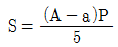
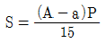
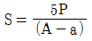
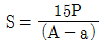
(정답률: 58%)
89. 자켓 타입의 농축기에 가열증기가 150℃로 공급되고 있는 데 농축기에 스켈이 부착되어 열관류계수가 1/4로 되었다면 동등한 능력을 발생키 위한 공급 증기의 온도는? (단, 액의 비점은 100℃ 임)
- 200℃
- 250℃
- 300℃
- 350℃
(정답률: 42%)
90. 급수온도 20℃인 보일러에서 증기압력이 10㎏/cm2이며 이때 온도 300℃의 증기가 매시간당 1 ton씩 발생된다고 할때의 상당 증발량은? (단, 증기압력 10㎏/cm2에 대한 300℃의 증기엔탈피는 662kcal/㎏, 20℃에 대한 급수엔탈피는 20kcal/㎏)
- 1191㎏/h
- 2048㎏/h
- 2247㎏/h
- 3232㎏/h
(정답률: 20%)
91. 열발생설비에 공기 예열기를 설치 사용시 장점이 아닌 것은?
- 배가스 손실을 줄인다.
- 연소 효율이 증가 한다.
- 보일러 효율이 높아진다.
- 과잉공기가 많아진다.
(정답률: 60%)
92. 그림과 같은 병류형 열교환기에서 적용되는 △Tm에 관한 식은?(단, 하첨자 h : 고온측, 1 : 입구 c : 저온측, 2 : 출구)
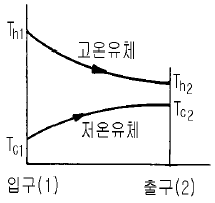
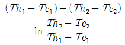
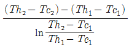
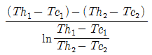
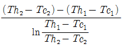
(정답률: 54%)
93. 전기저항로에 발열체의 저항이 R[Ω], 여기에 I[A]의 전류를 흘렸을 때 발생하는 이론 열량은 시간당 얼마인가?
- 864 IR cal
- 846 IR cal
- 864 I2R cal
- 846 I2R cal
(정답률: 49%)
94. 2중관 열교환기에 있어서의 열관류율(K)의 근사식은? (단, K : 열관류율, Fi :내관 내면적, Fo : 내관 외면적, αi : 내관 내면과 유체사이의 경막계수, αo : 내관 외면과 유체사이의 경막계수이며 전열계산은 내관 외면기준일 때이다.)
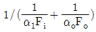
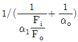
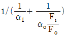
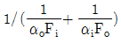
(정답률: 20%)
95. 다이아프램 밸브(diaphram valve)에 대한 설명중 제일 부적당한 것은?
- 역류를 방지하기 위한 것이다.
- 유체의 흐름에 주는 저항이 작다.
- 기밀(氣密)할 때 패킹이 불필요하다.
- 화학약품을 차단하여 금속부분의 부식을 방지한다.
(정답률: 72%)
96. 프라이밍 및 포오밍 발생시의 조치를 열거한 것으로 관계 없는 것은?
- 안전밸브를 전개하여 압력을 강하시킨다.
- 수위가 출렁거리면 조용히 취출을 한다.
- 먼저 연소를 억제한다.
- 보일러 물을 조사한다.
(정답률: 43%)
97. 원통 보일러를 수관 보일러와 비교하였을 때의 설명으로 틀린 것은?
- 형상에 비해서 전열면적이 적고 열효율은 수관보일러보다 낮다.
- 전열면적당 수부의 크기는 수관보일러에 비해 크다.
- 구조가 간단하므로 취급이 쉽다.
- 구조상 고압용 및 대용량에 적합하다.
(정답률: 46%)
98. 보일러 용량 표시방법 중 1마력(Hp)은 상당증발량(kg/h) 얼마에 해당하는가?
- 13.6
- 15.6
- 34.5
- 75
(정답률: 66%)
99. 다음 중 열전도율이 가장 낮은 재료는?
- 니켈
- 탄소강
- 스켈
- 끄으름
(정답률: 70%)
100. 노통 연관 보일러의 노통의 바깥면과 이에 가장 가까운 연관의 면과는 얼마 이상의 틈새를 두어야 하는가?
- 5㎜
- 10㎜
- 20㎜
- 50㎜
(정답률: 52%)